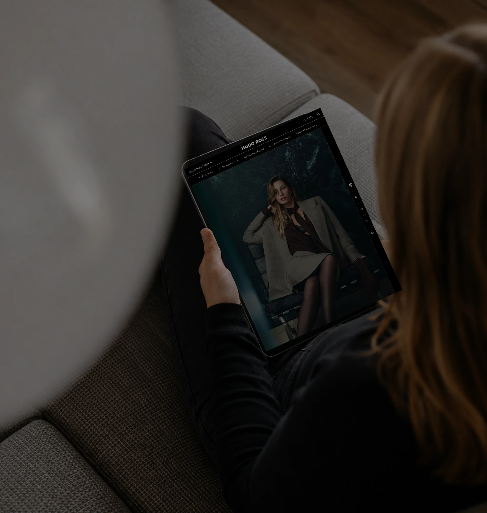

Work
Highlights of selected projects across branding, editorial and digital product design.

voestalpine Annual Report
Explore
Hugo Boss Annual Report
Explore
Highlights of selected projects across branding, editorial and digital product design.
voestalpine Annual Report
Explore
Hugo Boss Annual Report
ExploreHey there! I'm Havana Nguyen and I have been a User Experience Designer for 10 years across many industries: real estate, aerospace, healthcare, and ecommerce.
Every project has something that makes it unique. That's what I enjoy finding first. Whether it's a complex annual report, a digital product or a corporate website, I like understanding what people need before thinking about how it should look. Good design isn't just about making something beautiful — it's about making it feel clear, intuitive and consistent.